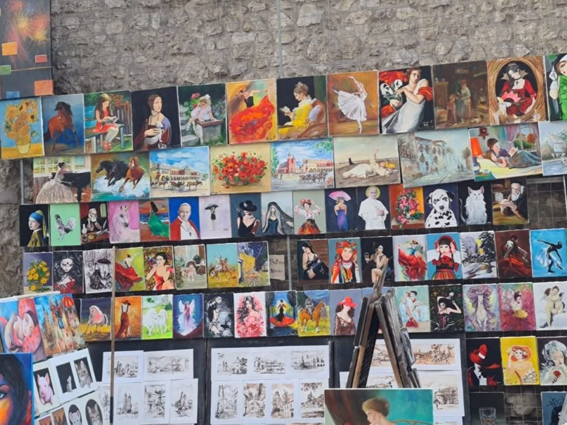

Gwara krakowska
Kraków - jak inne duże miasta - ma własną gwarę. Na przykład w Krakowie wychodzimy "na pole" albo dodajemy "że" na końcu niektórych wyrazów (np. chodźże, weźże). Krakowianie mają również własne nazwy wielu rzeczy, jak na przykład chrust (faworek), sznycel (kotlet mielony), kiszka (kaszanka). Udźwięczniają niektóre spółgłoski, co wpływa na brzmienie wyrazów (np. sok malinowy może brzmieć jak "sog malinowy"). Ponadto w dialekcie krakowskim akcent jest przesunięty na ostatnią sylabę.
